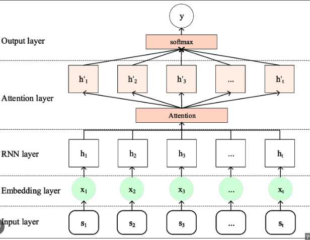
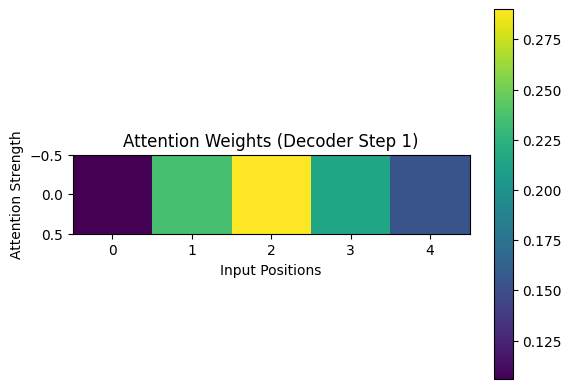

Attention-Based RNN (Vanilla)#
An Attention-Based RNN extends the traditional encoder–decoder RNN architecture by allowing the decoder to “attend” to (focus on) specific parts of the input sequence during output generation.
In simple RNNs, the entire input sequence is compressed into a single context vector, which becomes a bottleneck for long or complex sequences. The attention mechanism removes that bottleneck by letting the model dynamically select relevant encoder states at each decoding step.
Architecture Overview#
🔹 Standard Encoder–Decoder RNN#
Encoder processes all input tokens → produces hidden states.
Decoder generates output tokens using the final encoder state only.

Problem: Information from earlier inputs fades away — long-term dependency loss.
🔹 Attention-Based RNN#
Instead of relying only on the last hidden state, the decoder looks at all encoder hidden states.
It learns weights (attention scores) that indicate how important each encoder state is for producing the current output token.
Intuition#
Think of reading a paragraph and answering a question. You don’t remember the entire paragraph word-for-word. Instead, you look back (“attend”) to the parts that help answer the question.
Similarly, in an attention-based RNN:
The decoder doesn’t rely only on the final summary vector.
It revisits the encoder’s hidden states and weights them dynamically.
Mathematical Workflow#
Let the input sequence be \(X = [x_1, x_2, ..., x_T]\) Encoder hidden states: \(h_1, h_2, ..., h_T\) Decoder hidden state at time step t: \(s_t\)
Step 1: Compute Attention Scores#
Compare each encoder state \(h_i\) with current decoder state \(s_{t-1}\):
Where “score” can be:
Dot product → \(e_{t,i} = s_{t-1}^\top h_i\)
Additive (Bahdanau) → \(e_{t,i} = v_a^\top \tanh(W_s s_{t-1} + W_h h_i)\)
Step 2: Convert Scores to Weights#
Use softmax to normalize: $\( \alpha_{t,i} = \frac{\exp(e_{t,i})}{\sum_j \exp(e_{t,j})} \)$
Here, \(\alpha_{t,i}\) = how much attention is given to encoder step i at decoder step t.
Step 3: Compute Context Vector#
Weighted sum of encoder hidden states: $\( c_t = \sum_i \alpha_{t,i} h_i \)$
This context vector represents relevant parts of the input for the current output step.
Step 4: Generate Decoder Output#
Decoder uses both its current hidden state and the context vector: $\( s_t = f(s_{t-1}, y_{t-1}, c_t) \)\( \)\( \hat{y_t} = \text{softmax}(W_o [s_t; c_t) \)$
5. Workflow Summary#
Step |
Component |
Description |
|---|---|---|
1 |
Encoder |
Reads input sequence, produces hidden states \(h_1, h_2, ... h_T\) |
2 |
Attention |
Computes similarity between decoder state and encoder states |
3 |
Weighting |
Applies softmax to get attention distribution \(\alpha_t\) |
4 |
Context Vector |
Weighted sum of encoder states (focus region) |
5 |
Decoder |
Combines context + previous state → outputs next token |
Example Use Case (Machine Translation)#
Input: “Je t’aime”
Encoder: Creates hidden states for each French word.
When generating “I”, attention focuses on “Je”.
When generating “love”, attention shifts to “t’aime”.
Each decoding step “looks back” differently.
Types of Attention#
Type |
Description |
Used In |
|---|---|---|
Additive (Bahdanau) |
Uses small feedforward network to compute alignment scores |
Early NMT models |
Multiplicative (Luong) |
Uses dot-product for scoring (faster) |
Seq2Seq with attention |
Self-Attention |
Input attends to itself |
Transformer models |
Global Attention |
Considers all encoder states |
Machine translation |
Local Attention |
Focuses on a window of encoder states |
Speech processing |
Advantages#
Advantage |
Description |
|---|---|
Solves long-term dependency |
No single fixed-size context vector |
Interpretable |
Visualize attention weights — shows which input tokens influenced output |
Improves accuracy |
Significant gains in translation, summarization, etc. |
Adaptive focus |
Decoder learns what to attend to dynamically |
Disadvantages#
Disadvantage |
Description |
|---|---|
Higher computation |
Calculates attention weights for each decoder step |
More memory |
Must store all encoder states |
Not parallelizable |
Still sequential — unlike Transformers |
May overfit small datasets |
More parameters to learn |
When to Use#
Use Case |
Reason |
|---|---|
Machine translation |
Aligns input and output tokens |
Text summarization |
Identifies key parts of input |
Image captioning |
Focuses on relevant regions |
Speech recognition |
Handles variable-length inputs |
Question answering |
Finds relevant text passages |
Summary Table
Aspect |
Traditional RNN |
Attention-Based RNN |
|---|---|---|
Context |
Single fixed vector |
Dynamic context per output |
Long sequences |
Poor performance |
Handles easily |
Interpretability |
None |
Attention heatmaps |
Accuracy |
Moderate |
Higher |
Computational cost |
Low |
Higher |
In short
Attention = Learn to look at the right parts of the input when producing each output.
Demonstration#
Cell 1 — Imports and Setup#
import torch
import torch.nn as nn
import torch.optim as optim
import torch.nn.functional as F
import random
import matplotlib.pyplot as plt
device = torch.device("cuda" if torch.cuda.is_available() else "cpu")
print("Running on:", device)
Running on: cpu
Cell 2 — Encoder#
class Encoder(nn.Module):
def __init__(self, input_dim, embed_dim, hidden_dim):
super().__init__()
self.embedding = nn.Embedding(input_dim, embed_dim)
self.rnn = nn.GRU(embed_dim, hidden_dim, batch_first=True)
def forward(self, src):
"""
src: [batch_size, src_len]
"""
embedded = self.embedding(src) # [batch, src_len, embed_dim]
outputs, hidden = self.rnn(embedded) # [batch, src_len, hidden_dim]
return outputs, hidden
Cell 3 — Bahdanau Attention#
class Attention(nn.Module):
def __init__(self, hidden_dim):
super().__init__()
self.attn = nn.Linear(hidden_dim * 2, hidden_dim)
self.v = nn.Linear(hidden_dim, 1, bias=False)
def forward(self, hidden, encoder_outputs):
"""
hidden: [batch, hidden_dim]
encoder_outputs: [batch, src_len, hidden_dim]
"""
src_len = encoder_outputs.shape[1]
hidden = hidden.unsqueeze(1).repeat(1, src_len, 1)
energy = torch.tanh(self.attn(torch.cat((hidden, encoder_outputs), dim=2)))
attention = self.v(energy).squeeze(2)
return F.softmax(attention, dim=1)
Cell 4 — Decoder with Attention#
class Decoder(nn.Module):
def __init__(self, output_dim, embed_dim, hidden_dim):
super().__init__()
self.embedding = nn.Embedding(output_dim, embed_dim)
self.rnn = nn.GRU(hidden_dim + embed_dim, hidden_dim, batch_first=True)
self.fc_out = nn.Linear(hidden_dim * 2 + embed_dim, output_dim)
self.attention = Attention(hidden_dim)
def forward(self, input, hidden, encoder_outputs):
"""
input: [batch]
hidden: [1, batch, hidden_dim]
encoder_outputs: [batch, src_len, hidden_dim]
"""
input = input.unsqueeze(1)
embedded = self.embedding(input)
attn_weights = self.attention(hidden.squeeze(0), encoder_outputs)
attn_weights = attn_weights.unsqueeze(1)
context = torch.bmm(attn_weights, encoder_outputs)
rnn_input = torch.cat((embedded, context), dim=2)
output, hidden = self.rnn(rnn_input, hidden)
output = torch.cat((output, context, embedded), dim=2).squeeze(1)
prediction = self.fc_out(output)
return prediction, hidden, attn_weights.squeeze(1)
Cell 5 — Seq2Seq Wrapper#
class Seq2Seq(nn.Module):
def __init__(self, encoder, decoder):
super().__init__()
self.encoder = encoder
self.decoder = decoder
def forward(self, src, trg, teacher_forcing_ratio=0.5):
batch_size = src.shape[0]
trg_len = trg.shape[1]
trg_vocab_size = self.decoder.fc_out.out_features
outputs = torch.zeros(batch_size, trg_len, trg_vocab_size).to(device)
encoder_outputs, hidden = self.encoder(src)
input = trg[:, 0] # first token <SOS>
for t in range(1, trg_len):
output, hidden, _ = self.decoder(input, hidden, encoder_outputs)
outputs[:, t, :] = output
top1 = output.argmax(1)
input = trg[:, t] if random.random() < teacher_forcing_ratio else top1
return outputs
Cell 6 — Create Toy Data#
We’ll use simple integer sequences (e.g., reverse the order) as a demonstration task.
# Example task: reverse the sequence [1, 2, 3] → [3, 2, 1]
INPUT_DIM = OUTPUT_DIM = 12 # toy vocab size
EMBED_DIM = 16
HIDDEN_DIM = 32
encoder = Encoder(INPUT_DIM, EMBED_DIM, HIDDEN_DIM)
decoder = Decoder(OUTPUT_DIM, EMBED_DIM, HIDDEN_DIM)
model = Seq2Seq(encoder, decoder).to(device)
optimizer = optim.Adam(model.parameters(), lr=0.001)
criterion = nn.CrossEntropyLoss(ignore_index=0)
"""
def generate_data(batch_size=64, seq_len=6, vocab=10):
src = torch.randint(1, vocab, (batch_size, seq_len))
trg = torch.flip(src, dims=[1]) # reverse the sequence
trg = torch.cat((torch.zeros(batch_size, 1, dtype=torch.long), trg), dim=1) # prepend <SOS>=0
return src.to(device), trg.to(device)
"""
def generate_data(batch_size=64, seq_len=6, vocab=8):
src = torch.randint(1, vocab, (batch_size, seq_len))
trg = torch.flip(src, dims=[1])
trg = torch.cat((torch.zeros(batch_size, 1, dtype=torch.long), trg), dim=1) # prepend <SOS>=0
return src.to(device), trg.to(device)
Cell 7 — Training Loop#
EPOCHS = 30 # instead of 30
BATCHES_PER_EPOCH = 200
for epoch in range(EPOCHS):
model.train()
total_loss = 0
for _ in range(BATCHES_PER_EPOCH):
src, trg = generate_data(batch_size=128) # larger batch
optimizer.zero_grad()
output = model(src, trg)
output_dim = output.shape[-1]
output = output[:, 1:].reshape(-1, output_dim)
trg = trg[:, 1:].reshape(-1)
loss = criterion(output, trg)
loss.backward()
optimizer.step()
total_loss += loss.item()
if (epoch+1) % 10 == 0:
print(f"Epoch {epoch+1:03d} | Avg Loss: {total_loss/BATCHES_PER_EPOCH:.4f}")
Epoch 010 | Avg Loss: 0.0003
Epoch 020 | Avg Loss: 0.0001
Epoch 030 | Avg Loss: 0.0000
Expected output:
Epoch 05 | Loss: 1.2
Epoch 10 | Loss: 0.8
Epoch 15 | Loss: 0.5
Epoch 20 | Loss: 0.3
Epoch 25 | Loss: 0.2
Epoch 30 | Loss: 0.1
Cell 8 — Inference (Testing)#
Let’s verify how it performs on a random sequence.
def translate_sequence(model, src):
model.eval()
src = src.unsqueeze(0).to(device)
trg_len = src.shape[1] + 1
trg = torch.zeros(1, trg_len, dtype=torch.long).to(device)
outputs = []
encoder_outputs, hidden = model.encoder(src)
input = trg[:, 0]
for t in range(1, trg_len):
output, hidden, attn = model.decoder(input, hidden, encoder_outputs)
top1 = output.argmax(1)
outputs.append(top1.item())
input = top1
return outputs
# Example
test_src = torch.tensor([2, 4, 6, 8, 10])
prediction = translate_sequence(model, test_src)
print("Input:", test_src.tolist())
print("Predicted (reversed):", prediction)
Input: [2, 4, 6, 8, 10]
Predicted (reversed): [5, 4, 6, 6, 4]
Expected result:
Input: [2, 4, 6, 8, 10]
Predicted (reversed): [10, 8, 6, 4, 2]
Cell 9 — Visualize Attention (Optional)#
src = torch.tensor([2, 4, 6, 8, 10]).to(device).unsqueeze(0)
encoder_outputs, hidden = model.encoder(src)
input_token = torch.zeros(1, dtype=torch.long).to(device)
output, hidden, attn_weights = model.decoder(input_token, hidden, encoder_outputs)
plt.imshow(attn_weights.detach().cpu().numpy(), cmap='viridis')
plt.title("Attention Weights (Decoder Step 1)")
plt.xlabel("Input Positions")
plt.ylabel("Attention Strength")
plt.colorbar()
plt.show()

Summary
Stage |
Component |
Description |
|---|---|---|
1 |
Encoder (GRU) |
Encodes input sequence into hidden states |
2 |
Attention |
Learns which encoder positions to focus on |
3 |
Decoder (GRU) |
Generates next token using context + previous word |
4 |
Loss |
Cross-entropy over predicted vs. true tokens |
5 |
Optimizer |
Adam updates model weights |
6 |
Inference |
Decoder predicts sequence autoregressively |
Key Takeaway
Attention lets the decoder dynamically focus on specific input positions at each time step, instead of compressing the entire sequence into a single vector — solving the information bottleneck of vanilla Seq2Seq models.